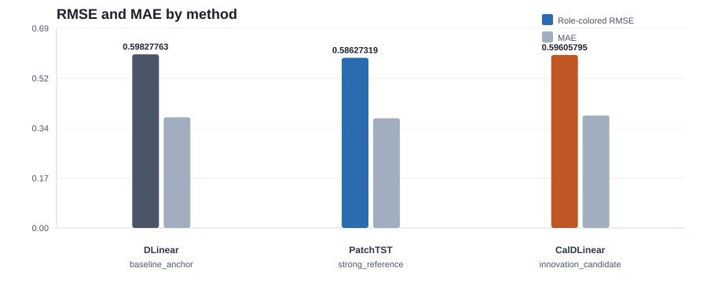
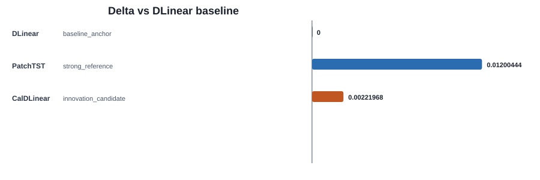

TS Auto Research Agent Benchmark Dashboard
RMSE 0.59827763 / MAE 0.38131171
RMSE 0.58627319 / MAE 0.37807289
RMSE 0.59605795 / MAE 0.38774657


Benchmark Rows
| Run | Role | Model | RMSE | MAE | Delta | Decision |
|---|---|---|---|---|---|---|
run_0051 | baseline_anchor | DLinear | 0.59827763 | 0.38131171 | 0 | continue |
run_0052 | strong_reference | PatchTST | 0.58627319 | 0.37807289 | 0.01200444 | continue |
run_0053 | innovation_candidate | CalDLinear | 0.59605795 | 0.38774657 | 0.00221968 | continue |
Literature Evidence
- APT: Affine Prototype-Timestamp For Time Series Forecasting Under Distribution Shift AAAI_2026
Prototype or timestamp-conditioned affine structure motivates using known horizon context instead of only local instance statistics.
- Reversible Instance Normalization for Accurate Time-Series Forecasting Against Distribution Shift ICLR_2022
Reversible normalization can help distribution shift, but its lookback-to-horizon statistic assumption must be tested.
- A Time Series is Worth 64 Words: Long-term Forecasting with Transformers (PatchTST) ICLR_2023
Patch-based strong references prevent overstating a DLinear-only improvement.
- An Analysis of Linear Time Series Forecasting Models ICML_2024
Recent linear-model analysis suggests constraints, normalization, and simple residual structure may matter more than adding heavy backbones.
- SIN: Selective and Interpretable Normalization for Long-Term Time Series Forecasting ICML_2024
Selective normalization argues against one fixed statistic for every series and motivates gated lightweight adapters.
Next Action
Deepen `CalDLinear` with ablations and more datasets before making a paper-level claim.